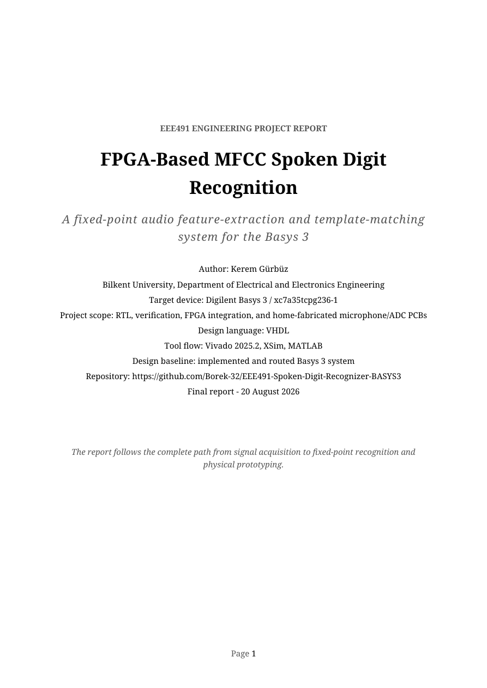

Problem
I wanted the fixed-point arithmetic, memory addresses, and controller sequence to remain visible while the recognizer ran in FPGA logic.
PROJECT 01 / MFCC
For my EEE491 project, I built a fixed-point, MFCC-based spoken-digit recognizer on a Basys 3. The VHDL path covers microphone capture, overlapping Hann windows, an AMD/Xilinx FFT, MEL and LOGMEL processing, DCT coefficients, and a hardware SAD/L1 template comparator. I checked the modules with XSim and MATLAB and documented the final programmed build and microphone/ADC PCB in the 119-page report. The final JC build met its constrained internal timing target at WNS +0.671 ns, but external ADC I/O timing remains open; the 30/30 result below is an offline development-set analysis.

I wanted the fixed-point arithmetic, memory addresses, and controller sequence to remain visible while the recognizer ran in FPGA logic.
In VHDL, I turn a 16,384-sample acquisition into 63 overlapping frames, 32 MEL bands, eight non-DC DCT coefficients, and a 16-frame template compared with 30 stored references.
I routed the JC design at WNS +0.671 ns, programmed the FPGA, and completed live spoken-digit testing and runtime reference recording, readback, and recall. The separate offline development-set analysis gives 30/30 under the COMP-compatible leave-one-out rule.
The ADC stores 16,384 samples. Hann-windowed 512-sample frames advance with a 256-sample hop, producing 63 frames. The pipeline retains 256 FFT magnitude bins, 32 MEL and LOGMEL values, and eight non-DC DCT coefficients per frame.
The comparator selects a 16-frame activity window and evaluates SAD/L1 distance over 16 × 8 coefficients against 30 references: ten digits with three retained trials per digit.

| Stage | Retained result | What it establishes |
|---|---|---|
| CTRL | 48/48 expected event rows; zero frame-address error | Stage order, overlap, and debug branches |
| WINDOW | 512/512 output words agree | Coefficient and BRAM pipeline alignment |
| FFT | Peak bin/address 32; AMD parity 256/256; integer-ideal maximum difference 45 counts | Corrected sample order and stored-bin identity for the 1 kHz unit test |
| MEL | 32/32 words agree | Filter, coefficient, and address paths |
| LOGMEL | 32/32 boundary-focused words agree | Exponent, ROM, interpolation, and zero clamp |
| DCT | 8/8 signed coefficients agree | C1–C8 addressing, accumulation, and rounding |
| DEBUG | 1,362/1,362 UART words agree | Packet markers, section order, extension, and full length |
| Historical main build | WNS +0.630 ns; WHS +0.014 ns; 12,825/12,825 routable nets routed | The report's retained main-build internal timing and routing result |
| Final JC build | WNS +0.671 ns; WHS +0.020 ns; 12,824/12,824 routable nets routed | The isolated JC-mapped full design that produced the programmed bitstream |

Implementation scale: the final JC build uses 5,603 LUTs, 8,437 registers, 23.5 block-RAM tiles, and 15 DSPs; the historical main build used 5,604 LUTs with the same register, BRAM, and DSP counts. These results cover internal constraints. No external ADC I/O delays were applied, so SPI timing is not closed.
I retained three FPGA-UART recordings for each digit from 0 to 9, including the complete ADC array and downstream stage memories. I then ran an offline, COMP-compatible leave-one-out analysis on the exact exported FPGA DCT words. All 30 queries selected the correct digit under the 16-frame × 8-coefficient SAD/L1 convention. These were analysis results, not 30 logged decisions made by the live FPGA.


I first built the LM324 microphone amplifier, buffered reference, adjustable gain, and two unequal Sallen-Key low-pass sections as the 44 mm × 40 mm single-sided board shown below. I later integrated a two-layer microphone/ADC revision with an ADC121S101 and a direct Basys 3 Pmod JC connection for the programmed full-design bench session.


Measurement note: the frequency-response figures are LTspice simulations. I did not retain a calibrated transfer-function sweep, transient oscilloscope trace, or power measurement.
The recovered schematic and PCB were reconciled through KiCad's native connectivity model. Twenty-one named schematic nets account for the connected copper, with one intentionally isolated unused Pmod pad left as no-net. This establishes connectivity traceability; it does not make the board fabrication-ready.


PCB checks: named-net reconciliation and resolution of the PCB DRC/ERC findings are complete. The two voltage readings above are bench points; a calibrated physical transfer-function sweep remains to be measured.
ADC integration: the corrected ADC121S101 receiver has been integrated into the full MFCC design, and the known-voltage endpoint and raw receiver-word checks are complete. The dated implementation figures above describe their recorded builds.
This edition, corrected on 17 September 2026, reflects completed live recognition, reference recording and recall, ADC integration and endpoint checks, and PCB DRC/ERC resolution. The report retains its 119-page structure, figures, and recorded measurements. Use the normal link if the inline viewer is unavailable.
